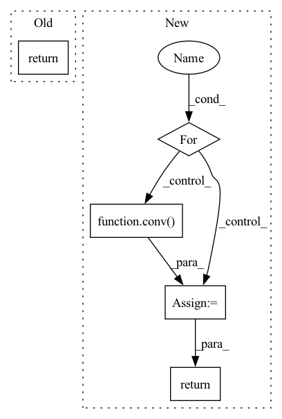

Pattern ID :32613
Before Change
h = conv(g, h)
g.ndata["h"] = h
hg = dgl.mean_nodes(g, "h")
return self.classify(hg)
"""
class GCN(torch.nn.Module):After Change
h = g.in_degrees().view(-1, 1).float()
for name, param in self.config:
if name is "GraphConv":
w, b = vars[idx], vars[idx + 1]
conv = self.graph_conv[idx_gcn]
h = conv( g, h, w, b)
g.ndata["h"] = h
idx += 2
idx_gcn += 1
if idx_gcn == len(self.graph_conv):
hg = dgl.mean_nodes(g, "h")
if name is "linear":
w, b = vars[idx], vars[idx + 1]
h = F.linear(h, w, b)
idx += 2
return h
def zero_grad(self, vars=None):
In pattern: SUPERPATTERN
Frequency: 3
Non-data size: 5
Instances Fragment ID: 94942600
Project Name: mims-harvard/g-meta
Commit Name: aed3468b5f71c857f788169b34b97a411628930b
Time: 2020-03-02
Author: cosamhkx@gmail.com
File Name: src/learner.py
M Class Name: Classifier
N Class Name: Classifier
M Method Name: forward(3)
N Method Name: forward(2)
M Parent Class: nn.Module
N Parent Class: nn.Module
M File Name: src/learner.py
N File Name: src/learner.py
M Start Line: 53
M End Line: 58
N Start Line: 94
N End Line: 125
Before Change
x = self.pool(x).view(-1, x.shape[1])
x = self.fc(x)
return x
After Change
for conv in self.stem:
x = conv(x)
for conv, attn in self.trunk:
x = conv( x)
x = attn(x)
return self.to_logits(x)
Fragment ID: 94942601
Project Name: lucidrains/vit-pytorch
Commit Name: b983bbee390bf2a9b677de5ba1e91b3327f8cfc8
Time: 2021-12-21
Author: lucidrains@gmail.com
File Name: vit_pytorch/mobile_vit.py
M Class Name: MobileViT
N Class Name: MobileViT
M Method Name: forward(2)
N Method Name: forward(2)
M Parent Class: nn.Module
N Parent Class: nn.Module
M File Name: vit_pytorch/mobile_vit.py
N File Name: vit_pytorch/mobile_vit.py
M Start Line: 209
M End Line: 228
N Start Line: 230
N End Line: 239
Before Change
super().__init__()
def forward(self, x):
return x
After Change
def forward(self, video):
tokens = self.to_tokens(video)
for dpe, ff, conv in self.stages:
tokens = dpe(tokens) + tokens
tokens = ff(tokens) + tokens
if exists(conv):
tokens = conv( tokens)
return self.to_logits(tokens)
Fragment ID: 94942603
Project Name: lucidrains/uniformer-pytorch
Commit Name: 5330624e7b20753dd8f595fd8a29b63dba3ff657
Time: 2021-11-15
Author: lucidrains@gmail.com
File Name: uniformer_pytorch/uniformer_pytorch.py
M Class Name: Uniformer
N Class Name: Uniformer
M Method Name: forward(2)
N Method Name: forward(2)
M Parent Class: nn.Module
N Parent Class: nn.Module
M File Name: uniformer_pytorch/uniformer_pytorch.py
N File Name: uniformer_pytorch/uniformer_pytorch.py
M Start Line: 11
M End Line: 11
N Start Line: 76
N End Line: 85